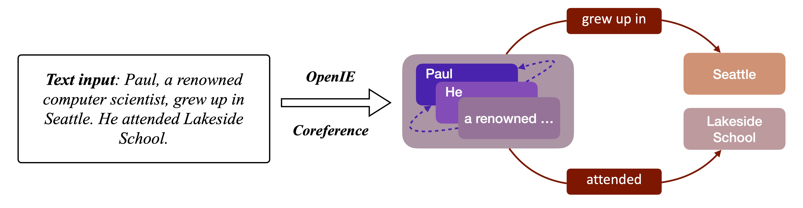

IE Graph Construction¶
The information extraction graph (IE Graph) aims to extract the structural information to represent the high-level information among natural sentences, e.g., text-based documents. We divide this process into two three basic steps:
coreference resolution,
constructing IE relations,
graph construction.
The figure below is an example for IE graph construction which contains both the Co-reference process and the Open Information Extraction process.
Coreference resolution is the basic procedure for information extraction task which aims to find expressions that refer to the same entities in the text sequence. For example, the noun “James” and pronouns “He” may refer to the same object (person) in sentence “James is on shop. He buys eggs.” In this step, all pronouns in the raw paragraph will be replaced with the corresponding nouns.
The code below shows the co-reference resolution process. We first use processor such as
Standford CoreNLP to obtain the co-reference dict of the raw text input.
Then, we replace the pron strs in the raw input with the original entity str to get the resolved text.
# Do coreference resolution on the whole 'raw_text_data'
coref_json = nlp_processor.annotate(raw_text_data.strip(), properties=props_coref)
from .utils import CORENLP_TIMEOUT_SIGNATURE
if CORENLP_TIMEOUT_SIGNATURE in coref_json:
raise TimeoutError('Coref-CoreNLP timed out at input: \n{}\n This item will be skipped. '
'Please check the input or change the timeout threshold.'.format(raw_text_data))
coref_dict = json.loads(coref_json)
# Extract and preserve necessary parsing results from coref_dict['sentences']
# sent_dict['tokenWords']: list of tokens in a sentence
sentences = []
for sent in coref_dict['sentences']:
sent_dict = {}
sent_dict['sentNum'] = sent['index'] # start from 0
sent_dict['tokens'] = sent['tokens']
sent_dict['tokenWords'] = [token['word'] for token in sent['tokens']]
sent_dict['sentText'] = ' '.join(sent_dict['tokenWords'])
sentences.append(sent_dict)
for k, v in coref_dict['corefs'].items():
# v is a list of dict, each dict contains a str
# v[0] contains 'original entity str'
# v[1:] contain 'pron strs' refers to 'original entity str'
ent_text = v[0]['text'] # 'original entity str'
if ',' in ent_text:
# cut the 'original entity str' if it is too long
ent_text = ent_text.split(',')[0].strip()
ent_sentNum = v[0]['sentNum'] - 1 # the sentNum 'original entity str' appears in
ent_startIndex = v[0]['startIndex'] - 1 # the startIndex 'original entity str' appears in
ent_endIndex = v[0]['endIndex'] - 1 # the endIndex 'original entity str' appears in
for pron in v[1:]:
pron_text = pron['text'] # 'pron strs'
if ent_text == pron_text or v[0]['text'] == pron_text:
continue
pron_sentNum = pron['sentNum'] - 1 # the sentNum 'pron str' appears in
pron_startIndex = pron['startIndex'] - 1
pron_endIndex = pron['endIndex'] - 1
# replace 'pron str' with 'original entity str'
sentences[pron_sentNum]['tokenWords'][pron_startIndex] = ent_text
for rm_idx in range(pron_startIndex+1, pron_endIndex):
sentences[pron_sentNum]['tokenWords'][rm_idx] = ""
# build resolved text
for sent_id, _ in enumerate(sentences):
sentences[sent_id]['tokenWords'] = list(filter(lambda a: a != "", sentences[sent_id]['tokenWords']))
sentences[sent_id]['resolvedText'] = ' '.join(sentences[sent_id]['tokenWords'])
To construct an IE graph, the second step is to extract the triples from the resolved text, which could be completed by leveraging some well-known information extraction systems (i.e. OpenIE). After this step, we can obtain a list of triples, and a triple can be denoted as \((n_i, r_{i, j}, n_j)\).
# use OpenIE to extract triples from resolvedText
all_sent_triples = {}
for sent in sentences:
resolved_sent = sent['resolvedText']
openie_json = nlp_processor.annotate(resolved_sent.strip(), properties=props_openie)
if CORENLP_TIMEOUT_SIGNATURE in openie_json:
raise TimeoutError('OpenIE-CoreNLP timed out at input: \n{}\n This item will be skipped. '
'Please check the input or change the timeout threshold.'.format(raw_text_data))
openie_dict = json.loads(openie_json)
for triple_dict in openie_dict['sentences'][0]['openie']:
sbj = triple_dict['subject']
rel = triple_dict['relation']
if rel in ['was', 'is', 'were', 'are']:
continue
obj = triple_dict['object']
# If two triples have the same subject and relation,
# only preserve the one has longer object
if sbj+'<TSEP>'+rel not in all_sent_triples.keys():
all_sent_triples[sbj+'<TSEP>'+rel] = [sbj, rel, obj]
else:
if len(obj)>len(all_sent_triples[sbj+'<TSEP>'+rel][2]):
all_sent_triples[sbj + '<TSEP>' + rel] = [sbj, rel, obj]
all_sent_triples_list = list(all_sent_triples.values()) # triples extracted from all sentences
How to use¶
For example, we can construct the IE graph given a raw textual input:
from graph4nlp.pytorch.modules.graph_construction.ie_graph_construction import IEBasedGraphConstruction
from stanfordcorenlp import StanfordCoreNLP
raw_data = ('James is on shop. He buys eggs.')
nlp_parser = StanfordCoreNLP('http://localhost', port=9000, timeout=300000)
props_coref = {
'annotators': 'tokenize, ssplit, pos, lemma, ner, parse, coref',
"tokenize.options":
"splitHyphenated=true,normalizeParentheses=true,normalizeOtherBrackets=true",
"tokenize.whitespace": False,
'ssplit.isOneSentence': False,
'outputFormat': 'json'
}
props_openie = {
'annotators': 'tokenize, ssplit, pos, ner, parse, openie',
"tokenize.options":
"splitHyphenated=true,normalizeParentheses=true,normalizeOtherBrackets=true",
"tokenize.whitespace": False,
'ssplit.isOneSentence': False,
'outputFormat': 'json',
"openie.triple.strict": "true"
}
processor_args = [props_coref, props_openie]
graphdata = IEBasedGraphConstruction.topology(raw_data, nlp_parser,
processor_args=processor_args,
merge_strategy=None,
edge_strategy=None)
Merge strategy¶
Since the ie graph is only constructed for sentences individually, we provide options to construct one graph for the paragraph consisting of multiple sentences. Currently, we support the following options:
None. Do not add additional nodes and edges and the original subgraphs may not be connected.global. It means all subjects in extracted triples are connected by a “GLOBAL_NODE” using a “global” edge.user_define. We suggest users to define their merge strategy by overriding the_graph_connect.
from graph4nlp.pytorch.modules.graph_construction.ie_graph_construction import IEBasedGraphConstruction
class NewIEBasedGraphConstruction(IEBasedGraphConstruction):
def _graph_connect(cls, triple_list, merge_strategy=None):
...
Edge Strategy¶
There are various dependency relations for ie graph nodes. Currently, we support the following options:
None. It means we will not add additional edges.as_node. We will view each edge as a graph node and construct the bipartite graph. For example, if there is an edge whose type is \(k\) between node \(i\) and node \(j\), we will insert a node \(k\) into the graph and link node \((i, k)\) and \((k, j)\).